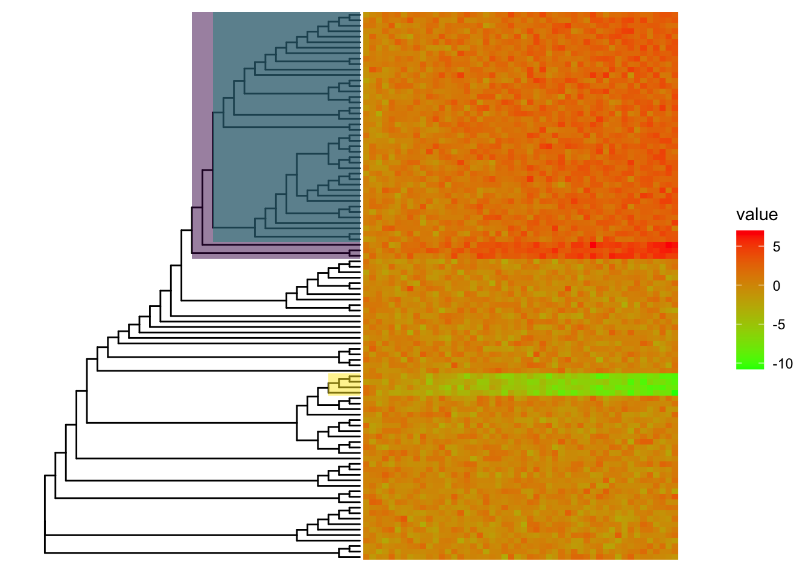
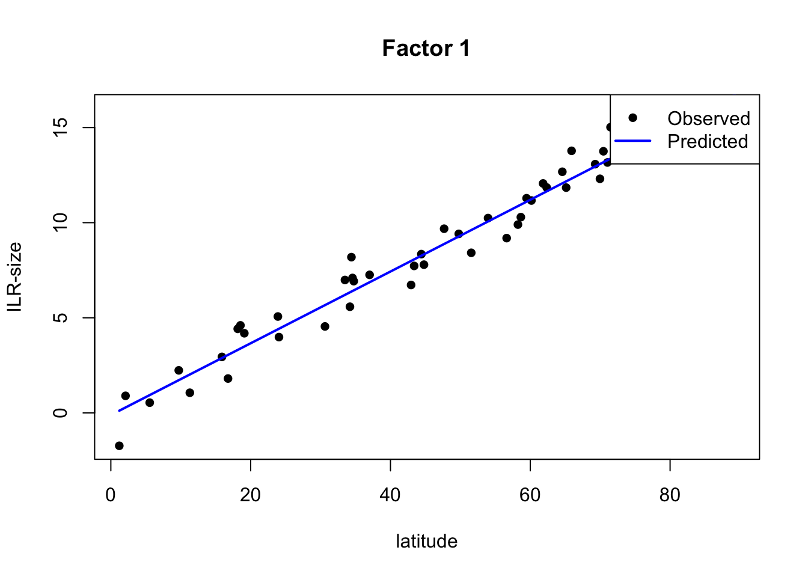
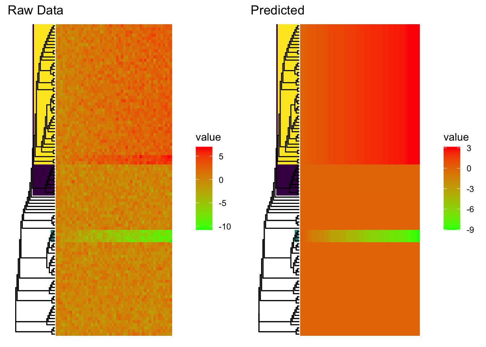

Last updated: 2020-06-10
Checks: 6 1
Knit directory: benchmark_treebased/
This reproducible R Markdown analysis was created with workflowr (version 1.5.0). The Checks tab describes the reproducibility checks that were applied when the results were created. The Past versions tab lists the development history.
The R Markdown file has unstaged changes. To know which version of the R Markdown file created these results, you’ll want to first commit it to the Git repo. If you’re still working on the analysis, you can ignore this warning. When you’re finished, you can run wflow_publish to commit the R Markdown file and build the HTML.
Great job! The global environment was empty. Objects defined in the global environment can affect the analysis in your R Markdown file in unknown ways. For reproduciblity it’s best to always run the code in an empty environment.
The command set.seed(20200610) was run prior to running the code in the R Markdown file. Setting a seed ensures that any results that rely on randomness, e.g. subsampling or permutations, are reproducible.
Great job! Recording the operating system, R version, and package versions is critical for reproducibility.
Nice! There were no cached chunks for this analysis, so you can be confident that you successfully produced the results during this run.
Great job! Using relative paths to the files within your workflowr project makes it easier to run your code on other machines.
Great! You are using Git for version control. Tracking code development and connecting the code version to the results is critical for reproducibility. The version displayed above was the version of the Git repository at the time these results were generated.
Note that you need to be careful to ensure that all relevant files for the analysis have been committed to Git prior to generating the results (you can use wflow_publish or wflow_git_commit). workflowr only checks the R Markdown file, but you know if there are other scripts or data files that it depends on. Below is the status of the Git repository when the results were generated:
Ignored files:
Ignored: .Rhistory
Ignored: .Rproj.user/
Unstaged changes:
Modified: analysis/phylofactor.Rmd
Note that any generated files, e.g. HTML, png, CSS, etc., are not included in this status report because it is ok for generated content to have uncommitted changes.
These are the previous versions of the R Markdown and HTML files. If you’ve configured a remote Git repository (see ?wflow_git_remote), click on the hyperlinks in the table below to view them.
| File | Version | Author | Date | Message |
|---|---|---|---|---|
| html | 2efd585 | fionarhuang | 2020-06-10 | Build site. |
| Rmd | f559b40 | fionarhuang | 2020-06-10 | Publish the initial files |
suppressPackageStartupMessages({
library(phylofactor)
library(ggtree)
})data(FTmicrobiome)
set.seed(1)
tree <- FTmicrobiome$tree
species <- sample(tree$tip.label,100)
tree <- drop.tip(tree,setdiff(tree$tip.label,species))
taxonomy <- FTmicrobiome$taxonomy
# Three selected clades
clade1 <- phangorn::Descendants(tree,128,'tips')[[1]]
clade2 <- phangorn::Descendants(tree,186,'tips')[[1]]
clade3 <- phangorn::Descendants(tree,131,'tips')[[1]]
clade_list <- list("clade1" = clade1,
"clade2" = clade2,
"clade3" = clade3)
clade_list$clade1
[1] 23 24 25 26 27 28 29 30 31 32 33 34 35 36 37 38 39 40 41 42 43 44 45 46 47
[26] 48 49 50 51 52 53 54 55 56 57 58 59 60 61 62 63 64 65 66 67
$clade2
[1] 85 86 87 88
$clade3
[1] 26 27 28 29 30 31 32 33 34 35 36 37 38 39 40 41 42 43 44 45 46 47 48 49 50
[26] 51 52 53 54 55 56 57 58 59 60 61 62 63 64 65 66 67lapply(clade_list, length)$clade1
[1] 45
$clade2
[1] 4
$clade3
[1] 42The simulated data in phylofactor.
set.seed(1)
m=length(species)
n=50 #number of samples
MetaData <- data.frame('latitude'=runif(n,0,90))
BodySize <- matrix(rlnorm(m*n),nrow=m)
rownames(BodySize) <- tree$tip.label # This step is necessary for PhyloFactor
for (spp in clade1){
BodySize[spp,] <- rlnorm(n,meanlog=MetaData$latitude/15)
}
for (spp in clade2){
BodySize[spp,] <- rlnorm(n,meanlog=-MetaData$latitude/10)
}
for (spp in clade3){
BodySize[spp,] <- rlnorm(n,meanlog=MetaData$latitude/30)
}Viz the simulated data
cols <- viridis::viridis(3)
pf.heatmap(tree=tree,Data=log(BodySize[,order(MetaData$latitude)]),color=NA)+
ggtree::geom_hilight(128,fill=cols[1])+
ggtree::geom_hilight(131,fill=cols[2])+
ggtree::geom_hilight(186,fill=cols[3])
phylofactorpf_PhyloFactor <- PhyloFactor(BodySize,tree,MetaData,
frmla = Data~latitude,
nfactors=3,choice='F')
1 factor completed in 0.00977 minutes. Estimated time of completion: 2020-06-10 14:32:03
2 factors completed in 0.0194 minutes. Estimated time of completion: 2020-06-10 14:32:03 Warning in PhyloRegression(TransformedData, X, frmla, Grps, contrast.fcn, :
Objective function produced 2 identical groups. Will choose group at random.
3 factors completed in 0.0285 minutes. Estimated time of completion: 2020-06-10 14:32:03 pf_PhyloFactor phylofactor object from function PhyloFactor
--------------------------------------------
Method : glm
Choice : F
Formula : Data ~ latitude
Number of species : 100
Number of factors : 3
Largest non-remainder bin : 55
Number of singletons : 0
Paraphyletic Remainder : 41 species
-------------------------------------------------------------
Factor Table:
Group1 Group2 F
Factor 1 55 member Monophyletic clade 45 member Monophyletic clade 1314.60
Factor 2 4 member Monophyletic clade 41 member Paraphyletic clade 895.19
Factor 3 45 member Monophyletic clade 10 member Monophyletic clade 271.79
Pr(>F)
Factor 1 0
Factor 2 0
Factor 3 0s_pf <- summary(pf_PhyloFactor,factor=1)
plot(s_pf$data$latitude,s_pf$data$Data,pch=16,xlab='latitude',ylab='ILR-size',main='Factor 1')
lines(s_pf$data$latitude,s_pf$data$fitted.values,col='blue',lwd=2)
legend('topright',legend=c('Observed','Predicted'),lwd=c(NA,2),pch=c(16,NA),col=c('black','blue'))
preds <- predict(pf_PhyloFactor)
g.orig <- pf.heatmap(pf_PhyloFactor,factors=1:3,
column.order=order(pf_PhyloFactor$X$latitude),
width=3)+
ggplot2::ggtitle('Raw Data')
g.pred <- pf.heatmap(pf_PhyloFactor,factors=1:3,Data=preds,
column.order=order(pf_PhyloFactor$X$latitude),
width=3)+
ggplot2::ggtitle('Predicted')
ggpubr::ggarrange(g.orig,g.pred,ncol=2)
sessionInfo()R version 3.6.1 (2019-07-05)
Platform: x86_64-apple-darwin15.6.0 (64-bit)
Running under: macOS Mojave 10.14.4
Matrix products: default
BLAS: /Library/Frameworks/R.framework/Versions/3.6/Resources/lib/libRblas.0.dylib
LAPACK: /Library/Frameworks/R.framework/Versions/3.6/Resources/lib/libRlapack.dylib
locale:
[1] en_US.UTF-8/en_US.UTF-8/en_US.UTF-8/C/en_US.UTF-8/en_US.UTF-8
attached base packages:
[1] stats graphics grDevices utils datasets methods base
other attached packages:
[1] ggtree_2.1.6 phylofactor_0.0.1 Matrix_1.2-17 data.table_1.12.6
[5] magrittr_1.5 ape_5.3
loaded via a namespace (and not attached):
[1] phangorn_2.5.5 treeio_1.11.3 tidyselect_1.0.0
[4] xfun_0.11 purrr_0.3.3 lattice_0.20-38
[7] colorspace_1.4-1 vctrs_0.2.4 viridisLite_0.3.0
[10] htmltools_0.4.0 yaml_2.2.0 rlang_0.4.5
[13] ggpubr_0.2.4 later_1.0.0 pillar_1.4.3
[16] glue_1.4.0 rvcheck_0.1.8 lifecycle_0.2.0
[19] stringr_1.4.0 ggsignif_0.6.0 munsell_0.5.0
[22] gtable_0.3.0 workflowr_1.5.0 evaluate_0.14
[25] labeling_0.3 knitr_1.26 httpuv_1.5.2
[28] parallel_3.6.1 fansi_0.4.1 Rcpp_1.0.4
[31] promises_1.1.0 scales_1.1.0 backports_1.1.6
[34] BiocManager_1.30.10 jsonlite_1.6.1 farver_2.0.3
[37] fs_1.3.1 gridExtra_2.3 fastmatch_1.1-0
[40] ggplot2_3.3.0 aplot_0.0.4.991 digest_0.6.25
[43] stringi_1.4.6 dplyr_0.8.5 cowplot_1.0.0
[46] grid_3.6.1 rprojroot_1.3-2 quadprog_1.5-7
[49] cli_2.0.2 tools_3.6.1 lazyeval_0.2.2
[52] patchwork_1.0.0 tibble_3.0.0 crayon_1.3.4
[55] whisker_0.4 tidyr_1.0.2 pkgconfig_2.0.3
[58] ellipsis_0.3.0 tidytree_0.3.3.991 viridis_0.5.1
[61] assertthat_0.2.1 rmarkdown_1.17 R6_2.4.1
[64] igraph_1.2.4.1 nlme_3.1-142 git2r_0.26.1
[67] compiler_3.6.1